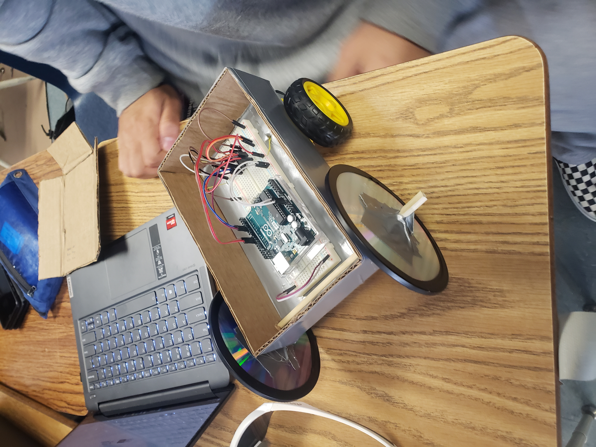
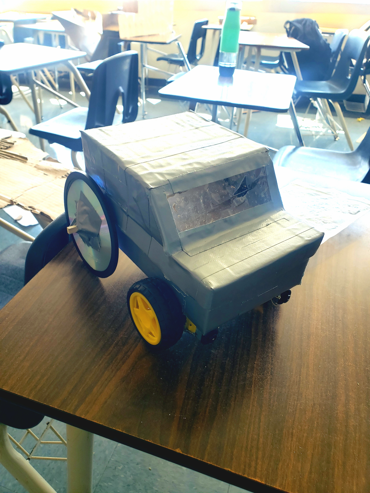

This week we began actually building our Second Semester Project. We were only given
two wheels and motors so we had to create two more wheels from stacks of CDs wrapped in electrical
tape. We created a box frame designed to hold the arduino and all the other electrical parts.
*2/13/2023 - 2/17/2023*

This week we continued building our Arduino Car project. One of my groupmates Bryson
figured out the code to get the arduino to power the motor using a breadboard, wires, and
a motor driver. While he worked on the electrical aspect, my other partner Aiden and I
worked on building the body of the car, and attached the backwheels completely to the car, along
with the motors attached to the front wheels. We also sautered on the wires to the motors.
*2/20/2023 - 2/24/2023*
We continued building our arduino car. We also worked on a top cover for the car for aesthetics.
We reinforced the body and the motorized wheels with duct tape. Bryson finished the code for turning the wheels,
but we discovered that the car does not move completely straight. At first we thought the glued
on back wheels weren't straight, but immobilizing them only made the car curve more.
We decided that we would just program one of the wheels to turn slower to balance out
the car's movement.
*2/27/2023 - 3/3/2023*

We completed building our arduino car. We added some designs to the top cover of the car
to make it look like a more realistic car. It included windows and a more car-like shape.
Bryson completed the code for making the car move. Unfortunately the bluetooth connection
wouldn't work, so the car could only drive on pre-written commands, instead of being
controlled by a phone. Also, the car veered to the right a bit instead of driving straight.
Other than that, everything was functioning. The car looked good and worked pretty well.